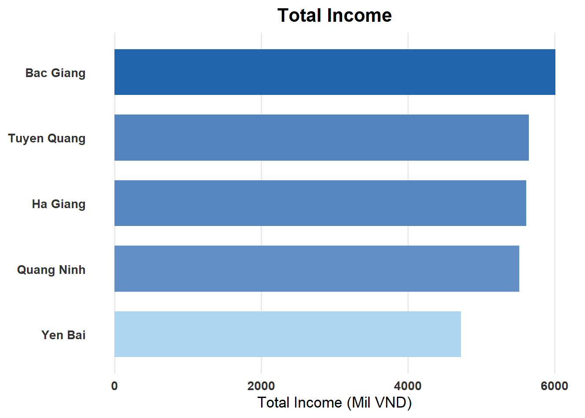
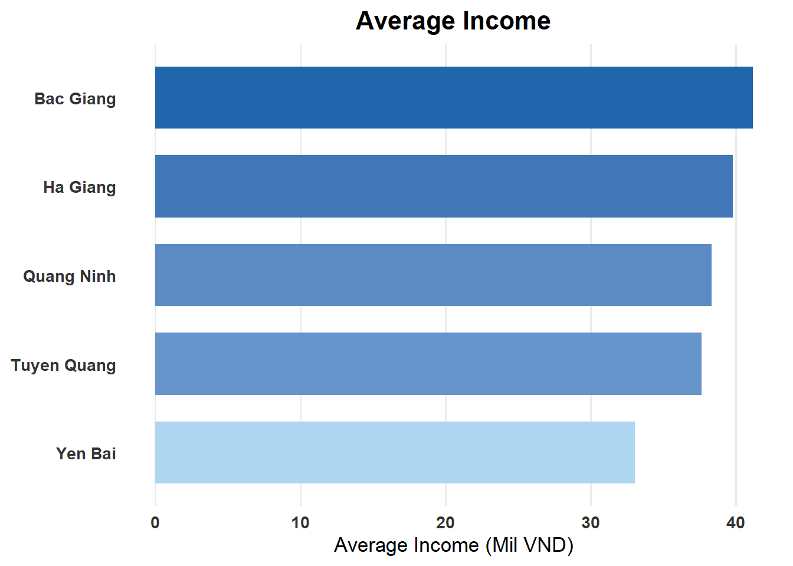
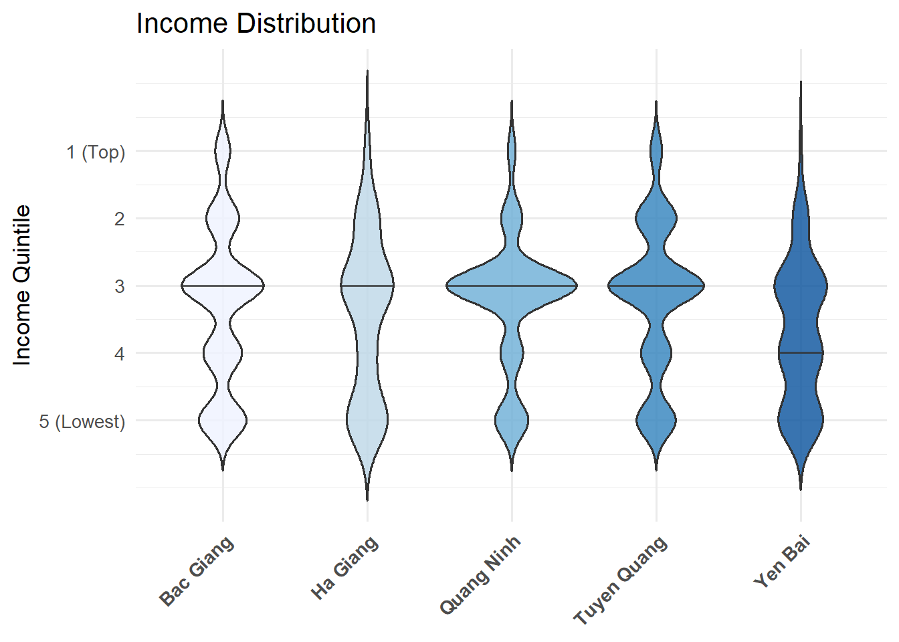
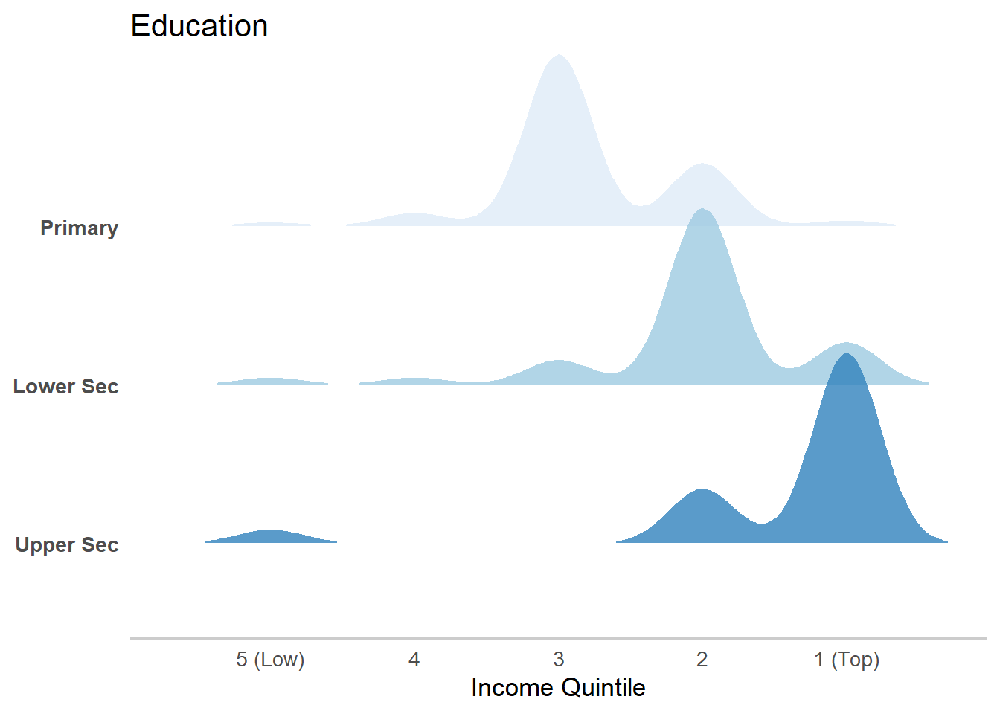
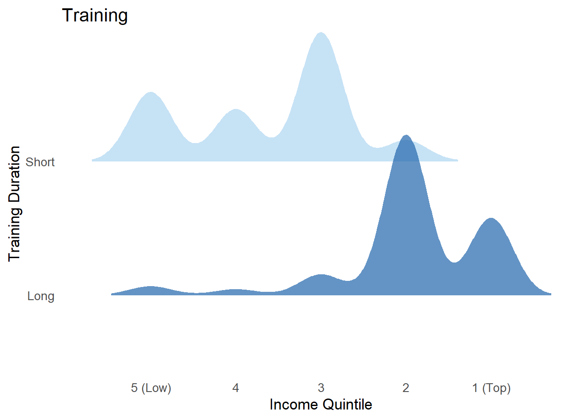
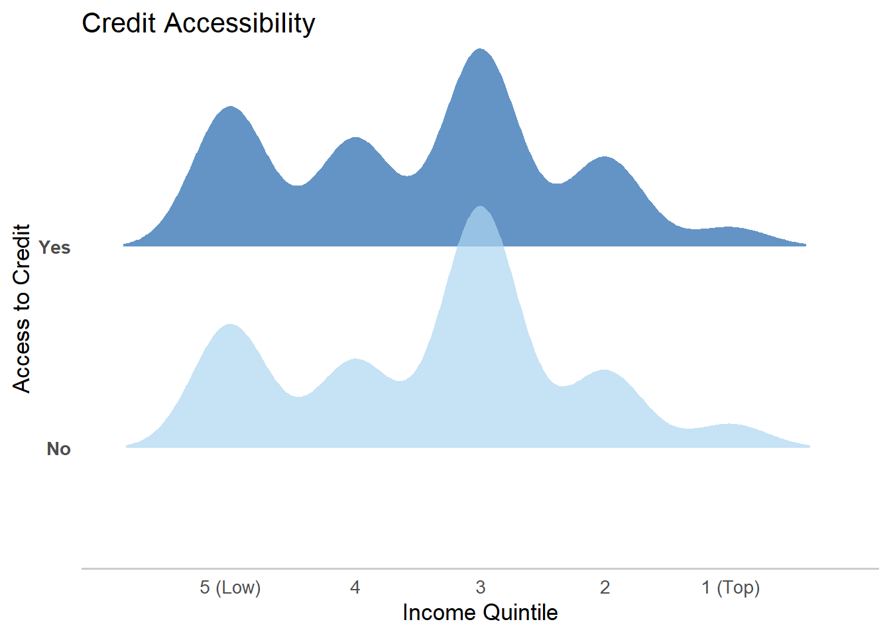
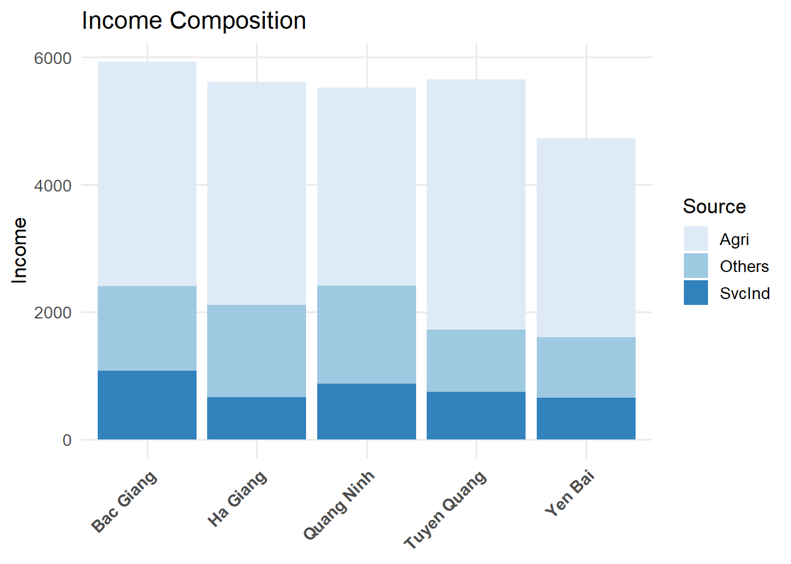
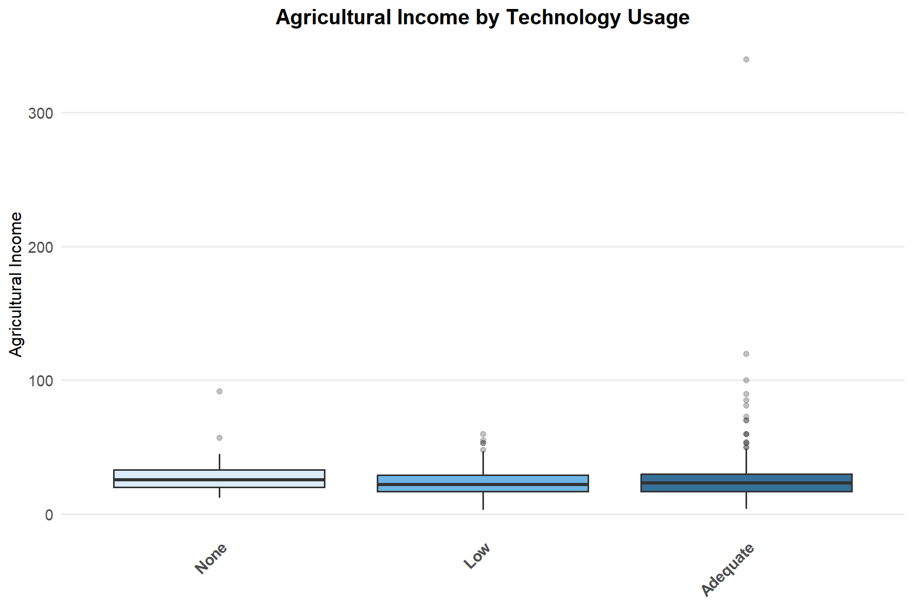

A Study of Rural Income using Visual Data Analytics
Overview
This is a study on rural income of informal labourers from five provinces located in the mountainous region of north Vietnam: Tuyen Quang, Quang Ninh, Ha Giang, Yen Bai, and Bac Giang.
Setting the scene
Our goal is to improve rural living conditions by using visual data insights to identify catalysts of income growth and socio-economic development.
This will be done through survey analysis, which is the process of transforming raw survey data into decision-relevant insights. For the analytical framework of this study, the survey respondents from each province will be treated as representative of the broader population.
The Design Tool
We will be using the following tidyverse family of packages and prepare data visualization using ggplot2 and its extensions.
pacman::p_load(tidyverse,readxl,ggridges,ggdist,scales)The Data
The target group for this study are informal labourers from the following provinces in northern Vietnam: Tuyen Quang, Quang Ninh, Ha Giang, Yen Bai and Bac Giang.
Data collected covered demographics, income, education and training, credit accessibility, technological application as well as living conditions and feedback on policies and opinions. We will be using 13 of the
750 Survey questionnaires were distributed of which 725 were used to create the dataset, comprising of 30 columns and 725 rows of data.
survey <- read_excel("data/Data.xlsx") %>%
select(1:13)Data Preparation
The original dataset uses column names such as “CPRO” and “TEIN” is not intuitive and requires interpretation.
Pertinent variables which will be used for data visualization were selectd and renamed as seen in below code.
Values of these variables were also renamed and coded as required to facilitate the onward data analytics process.
survey <- survey %>%
setNames(c("Province","Gender","Race","Industry","Quintile", "Income","Agri","SvcInd","Others","Education","Training","Credit","Technology")) %>%
mutate(
Province = recode(Province,
"1"="Tuyen Quang",
"2"="Quang Ninh",
"3"="Ha Giang",
"4"="Yen Bai",
"5"="Bac Giang"),
Gender = recode(Gender, "1"="Male", "2"="Female"),
Race = recode(Race, "1"="King", "2"="Minority"),
Industry = recode(Industry,
"1"="Agri",
"2"="SvcInd",
"3"="Others"),
Education = recode(Education,
"1"="Primary",
"2"="Lower Sec",
"3"="Upper Sec",
"4"="Others",
.default = NA_character_),
Training = recode(Training,
"1"="Short",
"2"="Long"),
Credit = recode(Credit,
"1"="No",
"2"="Yes"),
Technology = recode(Technology,
"1"="Low",
"2"="Adequate",
.default = "None"
) %>%
factor(levels = c("None","Low","Adequate")))Income Analysis
Data Cleansing
The dataset provided has 30 columns but only 13 columns will be used in this study. The code below is used to produce a clean subset of the original data for use in analysis and to remove any rows with missing income data. Direct income variables are grouped as ‘incomevar’.
incomevar <- c("Quintile", "Income", "Agri", "SvcInd", "Others")
survey_clean <- survey %>%
select(Province, all_of(incomevar), Education, Training, Credit, Technology) %>%
filter(!is.na(Income))Income Across the Provinces
Code
income_summary <- survey_clean %>%
group_by(Province) %>%
summarise(
total_income = sum(Income, na.rm = TRUE),
avg_income = mean(Income, na.rm = TRUE),
.groups = "drop")
ggplot(income_summary, aes(x = reorder(Province, total_income), y = total_income)) +
geom_col(aes(fill = total_income), width = 0.7) +
scale_fill_gradient(low = "#AED6F1", high = "#2166AC") +
coord_flip() +
theme_minimal(base_size = 13) +
theme(
panel.grid.major.y = element_blank(),
panel.grid.minor = element_blank(),
axis.text = element_text(face = "bold", color = "grey20"),
plot.title = element_text(face = "bold", size = 16, hjust = 0.5),
legend.position = "none"
) +
labs(
title = "Total Income",
x = NULL,
y = "Total Income (Mil VND)"
) +
scale_y_continuous()
Code
ggplot(income_summary, aes(x = reorder(Province, avg_income), y = avg_income)) +
geom_col(aes(fill = avg_income), width = 0.7) +
scale_fill_gradient(low = "#AED6F1", high = "#2166AC") +
coord_flip() +
theme_minimal(base_size = 13) +
theme(
panel.grid.major.y = element_blank(),
panel.grid.minor = element_blank(),
axis.text = element_text(face = "bold", color = "grey20"),
plot.title = element_text(face = "bold", size = 16, hjust = 0.5),
legend.position = "none"
) +
labs(
title = "Average Income",
x = NULL,
y = "Average Income (Mil VND)"
) +
scale_y_continuous()
The income levels in the provinces are compared using horizontal bar charts. It is ideal for comparing categorical data (i.e.the provinces) across a metric (i.e. income).
Bac Giang, has recorded the highest total income and average income of the provinces. This is largely due to its strategic locaion in the Red River Delta near to Hanoi.
On the other hand, Yen Bai is characterized by mountainous terrain covering more than 80% of its land area, making it challenging for economic development and infrastructure growth.
Income Disparity
Code
survey_clean %>%
filter(!is.na(Quintile)) %>%
ggplot(aes(x = Province, fill = factor(Quintile))) +
geom_bar(position = "stack") +
scale_fill_brewer(palette = "Blues") +
theme_minimal(base_size = 13) +
labs(
title = "Income Distribution",
x = NULL,
y = "Respondents",
fill = "Quintile"
) +
theme(
axis.text.x = element_text(angle = 45, hjust = 1, face = "bold"),
panel.grid.minor = element_blank()
)
Next we look at the income disparity across and within the provinces using a stacked bar chart. “Quintile” is used instead of “Income” for added clarity and minimize ‘noise’ from potential outliers. The number of survey respondents for each province is shown and is acceptable.
With 1 as the highest income quintile and 5 as the lowest income quintile, it can been seen that population of Quang Ninh is dominated by a larger ‘middle income’ population. This is indicative of a healthy growing economy as compared to its neighbours.
Code
survey_clean %>%
filter(!is.na(Quintile)) %>%
ggplot(aes(x = reorder(Province, Quintile, FUN = median), y = Quintile, fill = Province)) +
geom_violin(draw_quantiles = 0.5, trim = FALSE, alpha = 0.8) +
scale_y_reverse(breaks = 1:5, labels = c("1 (Top)", "2", "3", "4", "5 (Lowest)")) +
scale_fill_brewer(palette = "Blues") +
theme_minimal(base_size = 13) +
labs(
title = "Income Distribution",
x = NULL,
y = "Income Quintile"
) +
theme(
axis.text.x = element_text(angle = 45, hjust = 1, face="bold"),
legend.position = "none")
Using the Violin Plot, the wealth distribution can be seen more clearly. Ha Giang and Yen Bai are very thin at the top, suggesting that very few of the population are in the highest income quintile and more of their population.
It can be seen that the median for Yen Bai is lower than 3, indicating that majority of its population are in the lower income quintiles.
Drivers of Income Growth
The key drivers of income growth which will be analyzed are Education, Training and Credit. Ridgeline Plot will be used for this.
Code
survey_clean %>%
filter(!is.na(Education), !is.na(Quintile)) %>%
mutate(Education = factor(Education,
levels = c("Primary", "Lower Sec", "Upper Sec", "Others", "No Response"))) %>%
ggplot(aes(x = Quintile,
y = reorder(Education, Quintile, FUN = median),
fill = Education)) +
geom_density_ridges(
scale = 1.2,
alpha = 0.8,
bw = 0.5,
rel_min_height = 0.01,
color = NA) +
scale_x_reverse(breaks = 1:5, labels = c("1 (Top)", "2", "3", "4", "5 (Low)")) +
scale_fill_brewer(palette = "Blues") +
theme_minimal(base_size = 13) +
labs(
title = "Education",
x = "Income Quintile",
y = NULL
) +
theme(
legend.position = "none",
panel.grid.major = element_blank(),
panel.grid.minor = element_blank(),
axis.text.y = element_text(face = "bold"),
axis.line.x = element_line(color = "grey80")
)
The above shows the positive relationship between increasing the levels of formal education and raising income levels in general. However, there are some anomalies which could be due to resource constraints such as limited land or unexpected setbacks such as accidents which impact normal productivity levels.
Code
survey_clean %>%
filter(Training %in% c("Short", "Long"), !is.na(Quintile)) %>%
ggplot(aes(x = Quintile, y = Training, fill = Training)) +
geom_density_ridges(
scale = 1.2,
alpha = 0.7,
bw = 0.5,
rel_min_height = 0.01,
color = NA
) +
scale_x_reverse(breaks = 1:5, labels = c("1 (Top)", "2", "3", "4", "5 (Low)")) +
scale_fill_manual(values = c("Long" = "#2166AC", "Short" = "#AED6F1")) +
theme_minimal(base_size = 13) +
labs(
title = "Training",
x = "Income Quintile",
y = "Training Duration"
) +
theme(
legend.position = "none",
panel.grid.major = element_blank(),
panel.grid.minor = element_blank()
)
The above shows that short term vocational training is effective in shifting individuals from the lowest income quintile to the next. indicating a positive relationship between vocational training and income levels.
For longer term vocational training, the income quintile shift is to the top quintile. However, this avenue may not be feasible for the populants as it requires significant diversion of resources such as time and money to reap potential benefits.
Code
survey_clean %>%
filter(!is.na(Credit), !is.na(Quintile)) %>%
ggplot(aes(x = Quintile, y = Credit, fill = Credit)) +
geom_density_ridges(
scale = 1.2,
alpha = 0.7,
bw = 0.5,
rel_min_height = 0.01,
color = NA) +
scale_x_reverse(breaks = 1:5, labels = c("1 (Top)", "2", "3", "4", "5 (Low)")) +
scale_fill_manual(values = c("Yes" = "#2166AC", "No" = "#AED6F1")) +
theme_minimal(base_size = 13) +
labs(
title = "Credit Accessibility",
x = "Income Quintile",
y = "Access to Credit") +
theme(
legend.position = "none",
panel.grid.major = element_blank(),
panel.grid.minor = element_blank(),
axis.text.y = element_text(face = "bold"),
axis.line.x = element_line(color = "grey80")
)
The above shows that access to credit does enable individuals to move to higher income quintiles although this is uniform across the population.
Sources of Income
Code
income_components <- survey_clean %>%
select(Province, Agri, SvcInd, Others) %>%
filter(!is.na(Agri) & !is.na(SvcInd) & !is.na(Others)) %>%
pivot_longer(cols = c(Agri, SvcInd, Others),
names_to = "Source",
values_to = "Amount")
ggplot(income_components, aes(x = Province, y = Amount, fill = Source)) +
geom_col(position = "stack") +
scale_fill_brewer(palette = "Blues") +
theme_minimal(base_size = 13) +
labs(
title = "Income Composition",
x = NULL,
y = "Income",
fill = "Source"
) +
theme(
axis.text.x = element_text(angle = 45, hjust = 1, face = "bold"),
panel.grid.minor = element_blank()
)
Using the stacked bar chart, we can see the majority of income is derived from agricultural with the smallest source of income derived from services and industrial work across the regions.
This leaves the agricultural-based communities vulnerable to global warming phenomenons such as adverse weather conditions, labour force vulnerability such as urban migration as Vietnam moves from a developing to developed country and lack of pricing power in its agricultural exports.
Can Technology be an Accelerator?
Code
survey_clean %>%
mutate(
Technology = as.character(Technology),
Technology = na_if(Technology, "0"),
Technology = na_if(Technology, ""),
Technology = fct_na_value_to_level(as.factor(Technology), level = "None"),
Technology = fct_relevel(Technology, "None", "Low", "Adequate")
) %>%
filter(!is.na(Agri), Agri > 0) %>%
ggplot(aes(x = Technology, y = Agri, fill = Technology)) +
geom_boxplot(width = 0.8, alpha = 0.9, outlier.alpha = 0.3) + # wider boxplots
scale_fill_manual(values = c(
"None" = "#D6EAF8",
"Low" = "#5DADE2",
"Adequate" = "#1F618D"
)) +
scale_y_continuous(labels = scales::comma_format()) +
theme_minimal(base_size = 12) + # reduced font size
labs(
title = "Agricultural Income by Technology Usage",
x = NULL,
y = "Agricultural Income"
) +
theme(
legend.position = "none",
panel.grid.major.x = element_blank(),
panel.grid.minor = element_blank(),
axis.text.x = element_text(face="bold", angle=45, hjust=1, size=11),
axis.text.y = element_text(size=11),
plot.title = element_text(face="bold", size=15, hjust=0.5))
Using Box Plot, the impact of techlogy application on agricultural activity can be illustrated. There is an outlier within the ‘Adequate’ group, suggesting that it is possible for technology to exponentially increase income.
Code
survey_clean %>%
mutate(
Technology = as.character(Technology),
Technology = na_if(Technology, "0"),
Technology = na_if(Technology, ""),
Technology = fct_na_value_to_level(as.factor(Technology), level = "None"),
Technology = fct_relevel(Technology, "None", "Low", "Adequate")
) %>%
filter(!is.na(Agri), Agri > 0) %>%
group_by(Technology) %>%
filter(
Agri >= quantile(Agri, 0.25) - 1.5 * IQR(Agri),
Agri <= quantile(Agri, 0.75) + 1.5 * IQR(Agri)
) %>%
ungroup() %>%
ggplot(aes(x = Technology, y = Agri, fill = Technology)) +
geom_boxplot(width = 0.8, alpha = 0.9, outlier.shape = NA) +
scale_fill_manual(values = c(
"None" = "#D6EAF8",
"Low" = "#5DADE2",
"Adequate" = "#1F618D"
)) +
scale_y_continuous(labels = scales::comma_format()) +
theme_minimal(base_size = 12) +
labs(
title = "Agricultural Income by Technology Usage",
x = NULL,
y = "Agricultural Income"
) +
theme(
legend.position = "none",
panel.grid.major.x = element_blank(),
panel.grid.minor = element_blank(),
axis.text.x = element_text(face="bold", angle=45, hjust=1, size=11),
axis.text.y = element_text(size=11),
plot.title = element_text(face="bold", size=15, hjust=0.5))
Unexpectedly, the highest median income range is for respondents categorized with no technology application (‘None’). The interquartile range (IQR) is also higher than that of the ‘Low’ and ‘Adequate’ groups.
As survey questionnaires with null responses were also marked as ‘None’, this might include those with genuinely do not use any technology or are at the other end of the spectrum (i.e. highly automated) given that there were only two options (‘Low’ or ‘Adequate’) available in the questionnaire.
Low technology application shows the lowest medium income and longest downward whisker compared to the other two categories. In contrast, adequate technology application has the longest upward whisker, indicating a higher potential income. As such, technology can be seen as an accelerator rather than a factor for income growth.
Conclusion
• Geography naturally imposes ‘income ceilings’ as illustrated by the different fates of Bac Giang (near Hanoi) and Yen Bai (‘unfriendly’ mountainous terrain) even though both provinces are in North Vietnam.
• There is a direct positive correlation between formal education and income as seen in the analysis on the returns of investment of formal education and vocational training, with long term vocational training seen to ‘propel’ income growth. However, the opportunity costs of engagement are high and thus acting as a deterrent. As such, focus on the promotion and delivery of short-term vocational training will bring about faster and more effective results for lower income segments of the population.
• Technology application does not appear to be a key factor in income growth, instead acting as accelerator. More analysis is required to explore this paradox given that the use of technology is generally assumed to increase productive capacity and hence income. Suggested variables to be consider are accessibility, subsidies, training, costs, size of agricultural operations and feasibility of application.
• Access to credit is clearly a factor of income growth across all provinces so policy implementations could focus on expanding the use of this fiscal tool to accelerate income growth.
• Lastly, policymakers should also take heed of changes in the labour force in agricultural provinces to protect Vietnam’s self-sufficiency in agriculture.

With rapid industrialization and if the urban-rural income levels widen, urban migration pose an issue for the sustainability of the agricultural industry over time.

Readings & References
[1] Anh Ngoc Mai, Thao Huong Pham, Ha Thanh Hoang, Hoa Hoang Thi Nguyen (2021). Income of informal labourers in rural areas: A survey dataset of northern mountainous regions in Vietnam. Data in Brief, 38, 107292. https://doi.org/10.1016/j.dib.2021.107292
[2] Anh Ngoc Mai (2021), “Dataset for paper”, Mendeley Data, V1. http://dx.doi.org/10.17632/s6p7dwj3j6.1
[3] National Statistics Office (NSO) – Vietnam. www.nso.gov.vn
[4] Dao Le Trang Anh, Nguyen Tuan Anh, Abbas Ali Chandio (2023). Climate change and its impacts on Vietnam agriculture: A macroeconomic perspective. Ecological Informatics, Volume 74,2023,101960, ISSN 1574-9541. https://doi.org/10.1016/j.ecoinf.2022.101960
[5] Emily Gray, Darryl Jones (2022). Innovation, agricultural productivity and sustainability in Viet Nam (OECD Food, Agriculture and Fisheries Papers, No. 181). OECD Publishing. https://doi.org/10.1787/9cc1f47a-en
[6] Tran Duc Vien,(2025, September 17).Vietnamese agriculture in the new era. Vietnam National University of Agriculture. https://eng.vnua.edu.vn/news-and-events/vietnamese-agriculture-in-the-new-era-57732
[7] National Statistics Office of Vietnam. (2021, June). The trend of inequality in income distribution in Vietnam 2016-2020 period. https://www.nso.gov.vn/en/data-and-statistics/2021/06/the-trend-of-inequality-in-income-distribution-in-vietnam-2016-2020-period/